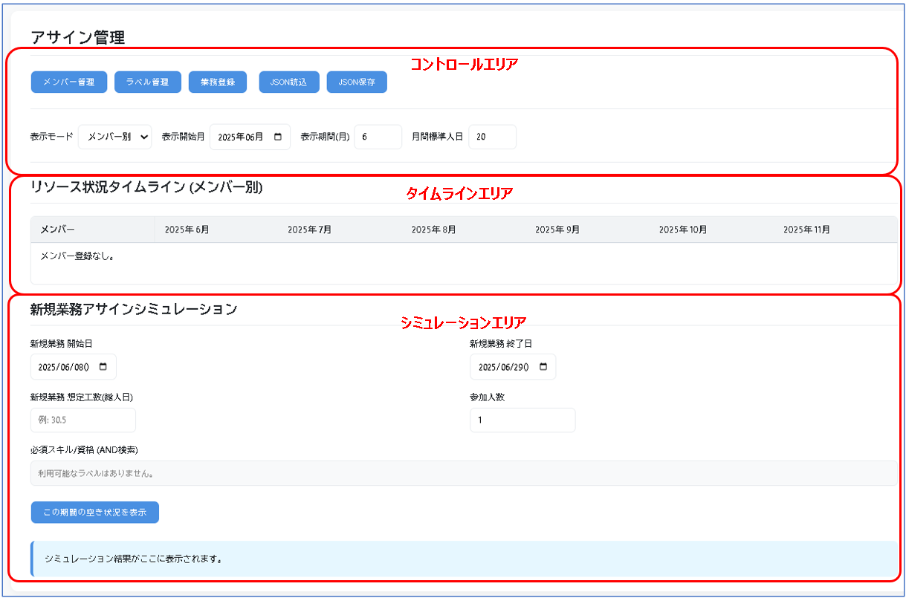
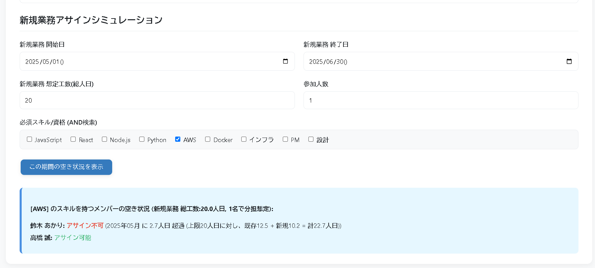

👥 アサイン管理 (Assign Management) 機能UP!
メンバーと業務（タスク）のリソース状況を月別のタイムライン形式で可視化するツールです。メンバーごとの負荷状況の確認や、新規業務のアサインシミュレーションができ、プロジェクトの人員配置計画を強力にサポートします。
主な特徴
- タイムライン表示: メンバー別・業務別の2つのモードでリソース状況を月ごとに確認できます。
- メンバー表示フィルタ (新機能): 業務別表示の際に、特定のメンバーが関わる業務だけを絞り込んで表示できます。
- 負荷状況の可視化: 月間の標準人日を超えたメンバーをハイライト表示し、高負荷状態を即座に把握できます。
- アサインシミュレーション: 新規業務の期間・工数・必要スキルを指定し、アサイン可能なメンバーを自動でリストアップします。
- 柔軟なデータ管理: メンバー情報、業務情報、ラベル（スキル等）を自由に追加・編集・削除できます。
- ドラッグ＆ドロップ: メンバーや業務の表示順を直感的に並べ替えられます。
- データ保存/読込: 全ての状態をJSONファイルとして保存・読み込みでき、チームでの共有やバックアップが容易です。
使い方マニュアル
画面構成
画面は大きく「コントロールエリア」「タイムラインエリア」「シミュレーションエリア」の3つに分かれています。
- コントロールエリア (上部):
- 管理ボタン: メンバー管理、ラベル管理、業務登録の各モーダルを開きます。
- データ入出力: JSON読込とJSON保存ボタンでデータを管理します。
- 表示設定: 表示モード（メンバー別/業務別）、表示開始月、表示期間、月間標準人日を設定します。業務別表示の際にはメンバー表示フィルタボタンが表示されます。
- タイムラインエリア (中央):
- 設定に応じて、メンバーまたは業務を縦軸、年月を横軸とした表が表示されます。
- 各セルには、その月にアサインされている業務（またはメンバー）と、計算された工数が人日単位で表示されます。
- メンバー別表示では、合計人日が標準を超えるとセルが赤くハイライトされます。
- シミュレーションエリア (下部):
- 新規業務の情報を入力し、この期間の空き状況を表示ボタンでシミュレーションを実行します。
- 結果エリアに、アサイン可能なメンバー、または不可の場合はその理由が表示されます。
基本的な使い方
- 1. メンバーとラベルの登録: メンバー管理とラベル管理から、プロジェクトのメンバーと必要なスキル（ラベル）を登録します。
- 2. 業務の登録: 業務登録から、業務の期間や総工数、担当するメンバーとその作業割合を設定します。
- 3. タイムラインで状況確認: 登録した情報がタイムラインに反映されます。「表示モード」を切り替えて、リソース状況を多角的に分析します。
- 4. (応用) メンバーで絞り込み: 「業務別」表示中にメンバー表示フィルタを使い、特定メンバーが関わる業務だけを表示させて、個人のタスクを俯瞰します。
- 5. 新規業務をシミュレーション: 新しい仕事の相談があったら、シミュレーションエリアに条件を入力し、誰が対応可能か素早く判断します。
- 6. データの保存: JSON保存で作業内容を保存し、次回JSON読込から再開できます。
主な機能の詳細
タイムラインを使いこなす (2つの表示モード)
タイムラインは「メンバー別」と「業務別」の2つの視点を切り替えることで、プロジェクトの状況を深く理解できます。
- メンバー別表示： 「誰が、いつ、忙しいか」を把握する
メンバーを縦軸にした表示です。各メンバーの月ごとの合計負荷（人日）が一目でわかり、設定した「月間標準人日」を超過するとセルが赤くハイライトされます。これにより、特定のメンバーに負荷が偏っていないか、休暇の取得は可能かなどを検討するのに役立ちます。
- 業務別表示： 「どの業務が、どうなっているか」を把握する
業務を縦軸にした表示です。各業務にどのメンバーが、どのくらいの工数で関わっているかを確認できます。新機能のメンバー表示フィルタと組み合わせることで、「Aさんの担当業務一覧」のように、特定のメンバーが関与する業務だけを抜き出して表示することも可能です。
アサインシミュレーションで未来を予測
「この条件の仕事、誰かお願いできる？」――プロジェクトマネージャーが日々直面するこの問いに、シミュレーション機能が答えます。
「新規業務の期間」「想定工数」「参加人数」「必須スキル（ラベル）」を入力してボタンを押すだけで、既存のアサイン状況を元に、どのメンバーがアサイン可能で、誰が難しいのか（そして、その理由）を自動でリストアップします。これにより、感覚的な判断ではなく、データに基づいた迅速な意思決定が可能になります。
データの保存と読込
- 保存: コントロールエリアのJSON保存ボタンをクリックします。
ASM[日付時刻].jsonというファイル名でダウンロードされます。 - 読込: JSON読込ボタンをクリックし、保存したJSONファイルを選択します。現在のデータは上書きされます。